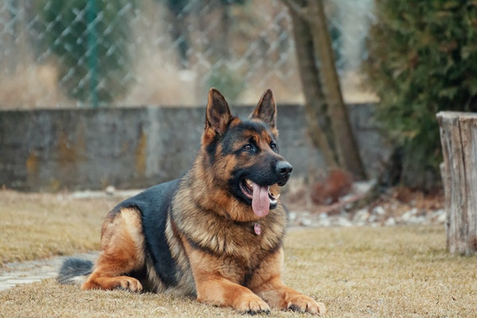
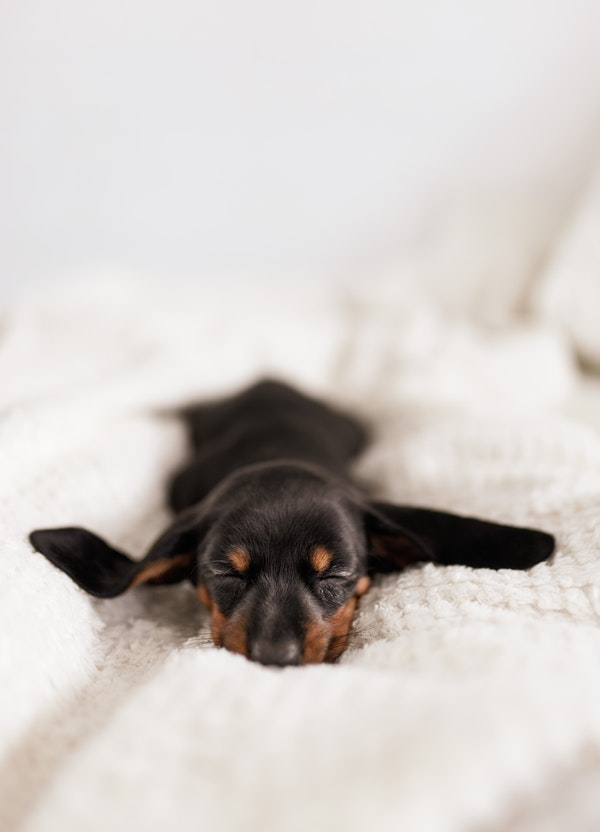

The German Shepherd Dog is one of America's most popular dog breeds — for good reasons. They're intelligent and capable working dogs. Their devotion and courage are unmatched. ... Despite their purebred status, you may find German Shepherds in shelters and breed specific rescues.
Life Span: 10 to 14 years
Height: 1 foot, 10 inches to 2 feet, 2 inches tall at ...
Weight: 75 to 95 pounds
The Rottweiler was originally dogs bred to drive cattle to market. Later they were used to pull carts for butchers. They were among the earliest police dogs and serve with honor in the military. Most important, they are popular family guardians and friends. Novice pet parents should beware, as these dogs are strong and intense. They need experienced care and training. Consistent, energetic pet parents will find a loving, faithful, and intelligent friend for life in a Rottie!
Size
Males typically are 24 to 27 inches tall at the shoulder and weigh 95 to 130 pounds.
Females typically are 22 to 25 inches tall at the shoulder and weigh 85 to 115 pounds.
